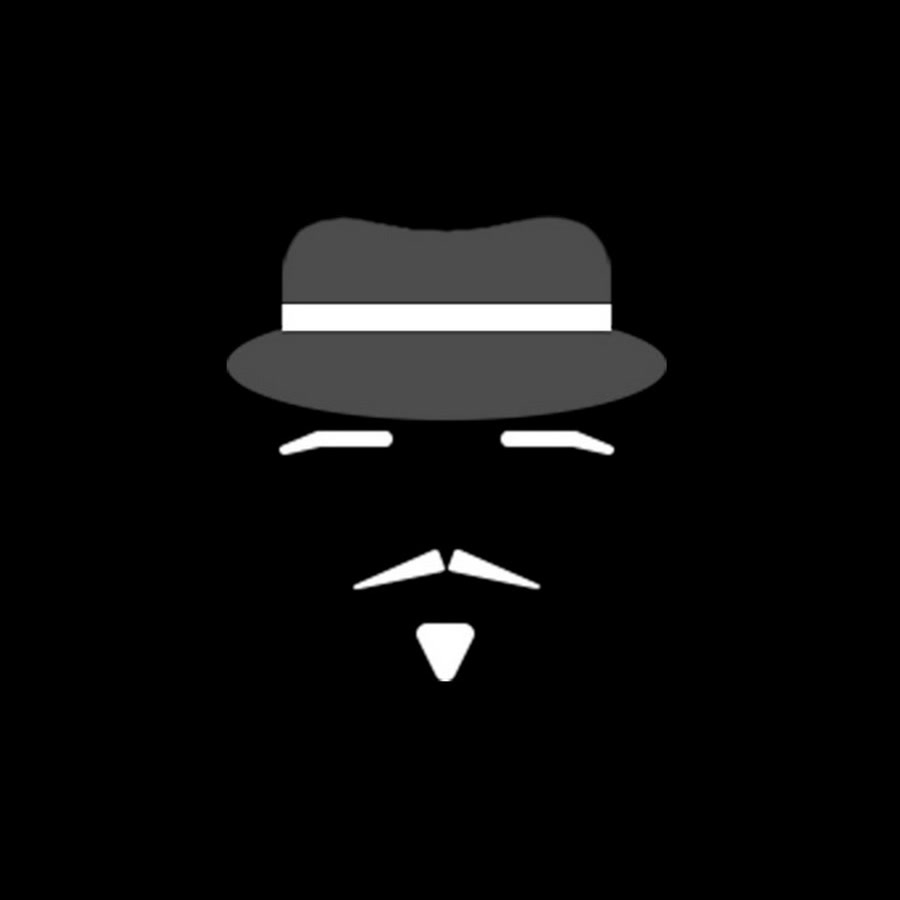

Lightzin Cortes
Os momentos mais insanos de GTA 6 das lives, todo dia 🎮🔥
Lightzin Cortes é um canal de cortes de lives de GTA 6 (Alanzoka, Paulinho o Loko e Bistecone). Todo corte tem o nome do streamer na tela e o link da live original na descrição.
Lightzin Cortes is a gaming clips channel. Every clip credits the streamer on screen and links the original live stream in the description.
Lightzin Cortes Postador
O Lightzin Cortes Postador é a ferramenta particular do próprio canal que envia os nossos cortes já editados para os nossos perfis no YouTube e no TikTok. Ela é usada só pelo dono do canal e não é aberta ao público.
Lightzin Cortes Postador is the channel's own private tool that uploads our edited clips to our own YouTube and TikTok profiles. It is used only by the channel owner and is not offered to the public.